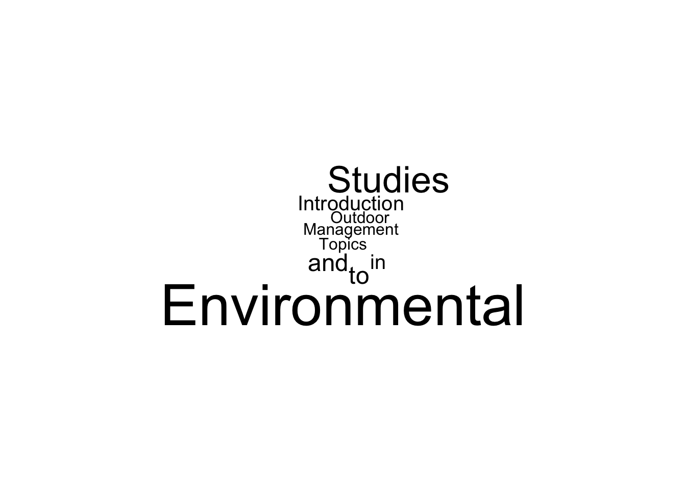
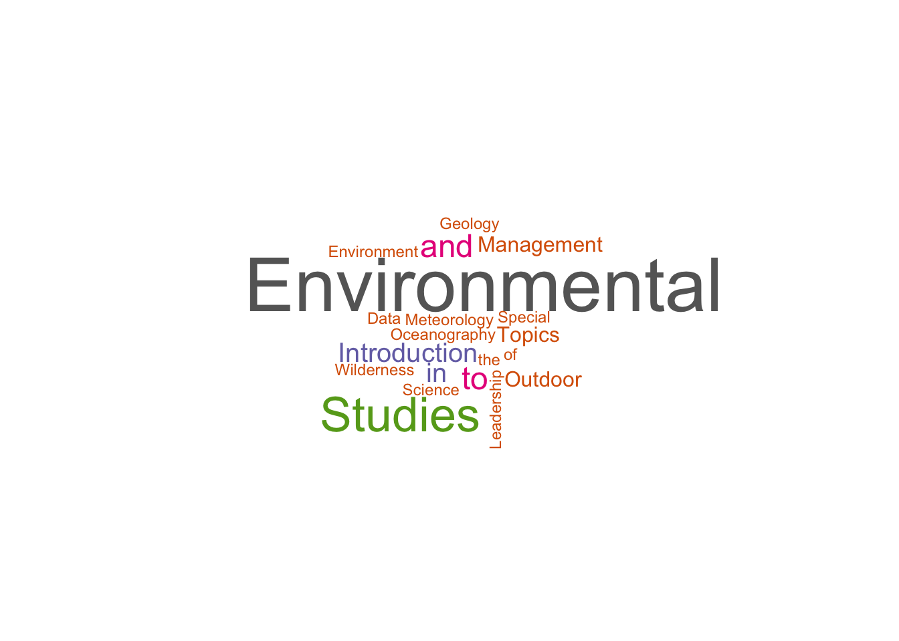

x <- "Rodney"
y <- 'Dyer'Text Based Data
Topic
This quick section will focus on the text—or, more aptly, character—data type. We commonly run across this as narrative or designations such as site names, locations, other bits of information that we need to
Data Types
You could use either single or double quotes to define a character type de novo—both work just fine. Having two of them is really helpful when you want to use one of the quote symbols inside the data.
z <- 'Bob Marley once said, "It is a foolish dog that barks at a passing bird"'
z[1] "Bob Marley once said, \"It is a foolish dog that barks at a passing bird\""But notice that when you print it out to the terminal (or in the output to your Quarto chunck), it uses the backslash-double quote format. It also show up if you use print
print(z)[1] "Bob Marley once said, \"It is a foolish dog that barks at a passing bird\""But not when you cat it:
cat(z)Bob Marley once said, "It is a foolish dog that barks at a passing bird"This is called escaping a special character. And it is a valid way to embed a quoting character into a sequence.
w <- "\"Learning R is Fun,\" said Rodney."
cat(w)"Learning R is Fun," said Rodney.There are other special characters that you will run across such as:
- The
Tabcharacter,\t - The
New Linecharacter\n - The
Returncharacter\r. This is becoming obsolete, in the “olden days” it was used with new line when we were making a transition from the manual typewriter where if you think about the action of using a typewriter, you need to advance a line AND return the carrage—the part that makes the letters on the paper—to the beginning of the line. That is why you sometimes see CR for on the return key. Windows used this convention and you may run across it still form peole who use that platform as\r\n. Mostly it is just yet another annoyance from some Windows software.
To see more, visit ?"'" in R.
The stringr Library
Another joy from the tidyverse folks is the stringr library that has made things a bit easier in handling string data. As usual, there is a cheatsheet linked in the assets on this topic.
library( tidyverse )The ’Verbs”
When dealing with text, there are some basic verbs that we should recognize as fundamental actions that you’ll apply across a wide variety of situations. For text data, these include:
Creatingnew/composite text.Findingcontent inside a string.Deletingcontent within a stringReplacingcontent in a string with some new character value.Manipulatingcontent in a string.
Creating
We’ve already seen how to create a single string, here is how we can smush (yes that is a technical term) together several kinds of data.
paste( "This","is","fun")[1] "This is fun"You can also mix-and-match different data types, as long as they can be coerced into a string type (which all data types can).
num <- 42
paste("It is", TRUE, "that my favorite number is", num, ".")[1] "It is TRUE that my favorite number is 42 ."When we work with character data, we need to realize that from the context of indexing, such as when we use a vector or data.frame, the sequence of characters is all one object.
length(z)[1] 1Even if it is made up of several characters. If we are interested subsequences within the string, we need to ask more specifically about the string length, not the variable length.
str_length( z )[1] 72There are times when we need to paste more than a couple of individual items together.
a <- 1:10
paste( a ) [1] "1" "2" "3" "4" "5" "6" "7" "8" "9" "10"paste( a, sep=", ") [1] "1" "2" "3" "4" "5" "6" "7" "8" "9" "10"paste( a, collapse=", ")[1] "1, 2, 3, 4, 5, 6, 7, 8, 9, 10"as separate columns
b <- LETTERS[1:10]
c <- rnorm(10,12, 1)
paste( a,b,c, sep = "-" ) [1] "1-A-12.7912652771503" "2-B-11.8937010477833" "3-C-11.3898231358371"
[4] "4-D-11.4967532001624" "5-E-13.2612608777438" "6-F-10.3265825835173"
[7] "7-G-11.1325734875453" "8-H-11.8791143979628" "9-I-11.5220014537577"
[10] "10-J-12.3076359305748"A stringr version is also available—with fewer keystrokes!
str_c( a, collapse=", " )[1] "1, 2, 3, 4, 5, 6, 7, 8, 9, 10"and
str_c( a,b,c) [1] "1A12.7912652771503" "2B11.8937010477833" "3C11.3898231358371"
[4] "4D11.4967532001624" "5E13.2612608777438" "6F10.3265825835173"
[7] "7G11.1325734875453" "8H11.8791143979628" "9I11.5220014537577"
[10] "10J12.3076359305748"str_c( a,b,c, sep="-") [1] "1-A-12.7912652771503" "2-B-11.8937010477833" "3-C-11.3898231358371"
[4] "4-D-11.4967532001624" "5-E-13.2612608777438" "6-F-10.3265825835173"
[7] "7-G-11.1325734875453" "8-H-11.8791143979628" "9-I-11.5220014537577"
[10] "10-J-12.3076359305748"Finding
Finding text may be done in a few ways.
cat(z)Bob Marley once said, "It is a foolish dog that barks at a passing bird"We can ask if:
- A particular sequence of characters exist in the string (
TRUE/FALSE).
str_detect(z, "Marley")[1] TRUEstr_detect(z, "marley") # case sensitive[1] FALSE- We can ask for the number of times a sequences shows up in a string.
str_count(z, "a")[1] 8- We can ask where the first occurance of a subsequence of characters starts at:
str_locate( z, "dog") start end
[1,] 40 42- We can find all occurences of a substring.
str_locate_all( z, "a")[[1]]
start end
[1,] 6 6
[2,] 18 18
[3,] 30 30
[4,] 46 46
[5,] 50 50
[6,] 55 55
[7,] 58 58
[8,] 61 61- If we know the location of a substring, you can extract it. Here I use the negative for the second index, which is treated as “second from the end” of the string.
str_sub(z, 24, -2)[1] "It is a foolish dog that barks at a passing bird"- If we have several character objects in a vector, we can find the subset that contains a specific sequence.
character_vec <- c(w,x,y,z)
character_vec[1] "\"Learning R is Fun,\" said Rodney."
[2] "Rodney"
[3] "Dyer"
[4] "Bob Marley once said, \"It is a foolish dog that barks at a passing bird\""str_detect( character_vec, "r")[1] TRUE FALSE TRUE TRUEHowever, it is case sensitive
str_detect( character_vec, "R")[1] TRUE TRUE FALSE FALSEDeleting
This is an easy one, if we want to remove one (the first occurence of) an item,
str_remove(z,"dog")[1] "Bob Marley once said, \"It is a foolish that barks at a passing bird\""Or all of them.
str_remove_all(z, "a")[1] "Bob Mrley once sid, \"It is foolish dog tht brks t pssing bird\""We can also remove compoennts by truncation
str_trunc( character_vec , 20)[1] "\"Learning R is Fu..." "Rodney" "Dyer"
[4] "Bob Marley once s..." Replacing
There are times when we are wanting to take some component within a string and replace it with another one—independent of the location of the item to be replaced within the string.
cat( str_replace(z, "Bob Marley", "Rodney") )Rodney once said, "It is a foolish dog that barks at a passing bird"If we do know the location (character location) and size (str_length) of what we are replacing, then we can use those numerical values direction.
str_sub(z, 1, 10)[1] "Bob Marley"Manipulating
- Making the string all lower case.
str_to_lower(z)[1] "bob marley once said, \"it is a foolish dog that barks at a passing bird\""- Making it all uppercase.
str_to_upper(z)[1] "BOB MARLEY ONCE SAID, \"IT IS A FOOLISH DOG THAT BARKS AT A PASSING BIRD\""- Creating
Title Casetext.
str_to_title(z)[1] "Bob Marley Once Said, \"It Is A Foolish Dog That Barks At A Passing Bird\""- Capitalizing it as if it were a sentence.
str_to_sentence( "this is getting a bit old, isn't it?")[1] "This is getting a bit old, isn't it?"tmp <- str_to_sentence("rodney exclaimed, \"but it doesn't know about internal quoted sentence fragments!\" and then sat down.")
cat(tmp)Rodney exclaimed, "but it doesn't know about internal quoted sentence fragments!" And then sat down.A Practical Example: Text Parsing
Practical Problem
You are working on curriculum at VCU and need to generate a data.frame of courses that have a columns for Program, Course Number, Course Title, and Credit Hours.
The raw data you have is the university bulletin.
Regular Expressions
A regular expression, or regex is a concise language used for detecting and describing patterns found in language. An entire course could be taught on the use of regex but here we’ll only spend enough time on it so that you know some kind of magic exists in the universe and can explore it if you need to in the future.
For this example, I’m going to use some text data that I have been playing with regarding curriculum development.
library( readr )
url <- "https://raw.githubusercontent.com/DyerlabTeaching/Textual-Data/refs/heads/main/data/ENVSclasses.txt?token=GHSAT0AAAAAACWO27UIA46V72P7DBZEP5EKZYZFFXQ"
read_lines( url ) -> envsThis goes out and grabs the data, and reads it in as a vector of type character.
class( envs )[1] "character"If we take a look at it, we can see these are the listings for the undergraduate courses in Environmental Studies at VCU.
head(envs,17) [1] "ENVS 101. Introduction to Environmental Studies I. 3 Hours."
[2] "Semester course; 3 lecture hours. 3 credits. Enrollment is restricted to"
[3] "environmental studies majors. Study of contemporary issues related to"
[4] "environmental studies including sustainability, biological conservation,"
[5] "global change and an overview of the core earth systems."
[6] "ENVS 102. Introduction to Environmental Studies II. 3 Hours."
[7] "Semester course; 3 lecture hours. 3 credits. Prerequisite: ENVS 101 or"
[8] "permission of instructor. Enrollment is restricted to environmental studies"
[9] "majors. Studies of contemporary issues related to government policy and"
[10] "environmental issues at local to international scales."
[11] "886 Undergraduate courses"
[12] "ENVS 105. Physical Geology. 3 Hours."
[13] "Semester course; 3 lecture hours. 3 credits. A descriptive approach to"
[14] "physical geology dealing with the history and structure of the earth,"
[15] "catastrophic events and geology as it relates to the contemporary"
[16] "environment. An optional laboratory, ENVZ 105, may be taken with this"
[17] "course." There are a couple of things to notice:
- The lines are short and the entry for each course is spread across several lines.
- Each course has a 4-letter code, a 3-digit number, a title, and then ends with the number of hours for the class.
- There are five lines necessary to describe ENVS 101 but six for ENVS 105.
- Line 11 appears to be a page number and page heading and not part of any course description.
Let’s say we wanted to extract some information about the course number, name, and number of hours from these data. This subset of data only has 262 line of text but if we were looking at all the courses at VCU, we would be faced with 25,945 lines of text! It could be done by hand but… that does not scale too well and I’ve got a lot better things to do than spend a year working on this simple task.
Matching
Let’s start by matching. Let’s look at what we did above and see if there are any tools we can use.
We do know that str_detect() will give us a TRUE/FALSE for any match. Let’s try that and take a look at the results.
idx <- str_detect(envs,"ENVS")
head( envs[idx] )[1] "ENVS 101. Introduction to Environmental Studies I. 3 Hours."
[2] "ENVS 102. Introduction to Environmental Studies II. 3 Hours."
[3] "Semester course; 3 lecture hours. 3 credits. Prerequisite: ENVS 101 or"
[4] "ENVS 105. Physical Geology. 3 Hours."
[5] "ENVS 201. Earth System Science. 3 Hours."
[6] "ENVS 222. Electronic Portfolios. 1 Hour." OK, except that line 3 isn’t a title line, it just has an ENVS in it.
Moveover, it also assumes that we are going to only be using ENVS but if we look at the end of the data set, we see that the lab courses in Environmental Studies are encoded as ENVZ and these will be totally ignored. Moreover, we would need to know, a priori, what all the program codes were before we started if we were going to take this approach.
tail( envs )[1] "Laboratory exercises coordinated with ENVS 335 lectures."
[2] "ENVZ 401. Meteorology and Climatology Laboratory. 1 Hour."
[3] "Semester course; 3 laboratory hours. 1 credit. Pre- or corequisite:"
[4] "ENVS 401. A series of laboratory and field experiments designed to"
[5] "quantify the elements of weather and climate and to interpret their local"
[6] "temporal and spatial variations." Using regex we can define a character pattern to look for. Let’s start by just taking the first line of text and using that to learn about pattern matching.
envs101 <- envs[1]
envs101[1] "ENVS 101. Introduction to Environmental Studies I. 3 Hours."The stringr library has a helper function that allows us to see what parts of a string are being matched by a specific pattern. This function is str_view() and it colors and puts into angle brackets, the part that is matched.
So, looking for the characters ENVS looks like:
str_view(envs101,"ENVS")[1] │ <ENVS> 101. Introduction to Environmental Studies I. 3 Hours.and looking for 101 yields.
str_view( envs101, "101")[1] │ ENVS <101>. Introduction to Environmental Studies I. 3 Hours.If ther is no match, nothing is returned:
str_view( envs101, "Rodney")and if many things are matched, it will highlight each of them.
str_view( envs101, "o")[1] │ ENVS 101. Intr<o>ducti<o>n t<o> Envir<o>nmental Studies I. 3 H<o>urs.So, let’s get more general and look for patterns. These patterns are encoded using square brackets.
- Matching on any digit, which is defined as
[:digit:].
str_view( envs101, "[:digit:]")[1] │ ENVS <1><0><1>. Introduction to Environmental Studies I. <3> Hours.- Matching any non-numeric character,
[:alpha:]
str_view( envs101, "[:alpha:]")[1] │ <E><N><V><S> 101. <I><n><t><r><o><d><u><c><t><i><o><n> <t><o> <E><n><v><i><r><o><n><m><e><n><t><a><l> <S><t><u><d><i><e><s> <I>. 3 <H><o><u><r><s>.- Matching punctuation,
[:punct:]
str_view( envs101, "[:punct:]")[1] │ ENVS 101<.> Introduction to Environmental Studies I<.> 3 Hours<.>- We can also specify the case of the punctuation.
str_view( envs101, "[:lower:]")[1] │ ENVS 101. I<n><t><r><o><d><u><c><t><i><o><n> <t><o> E<n><v><i><r><o><n><m><e><n><t><a><l> S<t><u><d><i><e><s> I. 3 H<o><u><r><s>.str_view( envs101, "[:upper:]")[1] │ <E><N><V><S> 101. <I>ntroduction to <E>nvironmental <S>tudies <I>. 3 <H>ours.- Or even spaces
str_view( envs101, "[:space:]")[1] │ ENVS< >101.< >Introduction< >to< >Environmental< >Studies< >I.< >3< >Hours.Combining Matches
That is helpful in some cases. But now we can start combining these things.
- Let’s mix a pattern and a fixed set of characters.
str_view( envs101, "[:digit:] Hours")[1] │ ENVS 101. Introduction to Environmental Studies I. <3 Hours>.- How about multiple patterns.
str_view( envs101, "[:upper:][:space:][:digit:]")[1] │ ENV<S 1>01. Introduction to Environmental Studies I. 3 Hours.- Or multiples of the same pattern. To have the exact number of items, use a single number enclosed in curly brackets right after ther pattern. Here we are matching 4-upper case digits.
str_view(envs101, "[:upper:]{4}")[1] │ <ENVS> 101. Introduction to Environmental Studies I. 3 Hours.We could also match those followed by a space and three numbers
str_view( envs101, "[:upper:]{4}[:space:][:digit:]{3}")[1] │ <ENVS 101>. Introduction to Environmental Studies I. 3 Hours.- We can generalize this a bit by asking for “zero or one” or “zero or more”—IMHO this is a terrible thing to match as a single thing.
str_view( envs101, "[:punct:]?")[1] │ <>E<>N<>V<>S<> <>1<>0<>1<.><> <>I<>n<>t<>r<>o<>d<>u<>c<>t<>i<>o<>n<> <>t<>o<> <>E<>n<>v<>i<>r<>o<>n<>m<>e<>n<>t<>a<>l<> <>S<>t<>u<>d<>i<>e<>s<> <>I<.><> <>3<> <>H<>o<>u<>r<>s<.><>str_view( envs101, "[:punct:]*")[1] │ <>E<>N<>V<>S<> <>1<>0<>1<.><> <>I<>n<>t<>r<>o<>d<>u<>c<>t<>i<>o<>n<> <>t<>o<> <>E<>n<>v<>i<>r<>o<>n<>m<>e<>n<>t<>a<>l<> <>S<>t<>u<>d<>i<>e<>s<> <>I<.><> <>3<> <>H<>o<>u<>r<>s<.><>But for our purposes, we can ask for “one or more” by appending a plus sign.
str_view( envs101, "[:digit:]+")[1] │ ENVS <101>. Introduction to Environmental Studies I. <3> Hours.or match to digits, punctuation, or letters (one or more) using the shorthand .+ notation. It is the period that matches anything and the plus that does one or more of them.
str_view( envs101, ".+")[1] │ <ENVS 101. Introduction to Environmental Studies I. 3 Hours.>This becomes helpful a bit later when we are trying to anchor the course designation (e.g., ENVS 101) at the start, ONE OR MORE THING IN THE MIDDLE, and then the end of the line with the number of hours (e.g., 3 Hours.)
Positional Matching
Where the items is in the string may be of importance to us. For example, consider another line in the data that specifies ENVS101 as a prerequisite. It does not come from a line of text that is the title of the course, it just also happens to match the 4 uppercase letters, space, and three digits pattern.
str_view( envs[37], "[:upper:]{4}[:space:][:digit:]{3}")[1] │ Semester course; 2 lecture hours. 2 credits. Prerequisites: <ENVS 101>This is where the position in the line may be of interest.
- To match things that occur at the beginning of the string, we prepend the pattern with the carat symbol.
str_view( envs101, "^[:upper:]{4}[:space:][:digit:]{3}")[1] │ <ENVS 101>. Introduction to Environmental Studies I. 3 Hours.This matches our first line but not a line where this pattern does not occur in the beginning of the string.
str_view( envs[37], "^[:upper:]{4}[:space:][:digit:]{3}")- For the end of the string, we use the dollar sign to anchor it to the end.
str_view( envs[37], "[:upper:]{4}[:space:][:digit:]{3}$")[1] │ Semester course; 2 lecture hours. 2 credits. Prerequisites: <ENVS 101>which is not in the envs101 string
str_view( envs101, "[:upper:]{4}[:space:][:digit:]{3}$")Putting it Together
So, now let’s pull this all together and see if we can match: 1. The course designation at the start of the line. 2. The title 3. The end of the line with the number of hours.
str_view( envs101, "^[:upper:]{4} [:digit:]{3}.*[:digit:] Hours.$")[1] │ <ENVS 101. Introduction to Environmental Studies I. 3 Hours.>So, there is one little extension—and this a common theme we’ve run across—and that has to do with the fact that programmers are a bit lazy. You can subsititue, the square-bracket-colon-word-colon-square-bracket for the following:
[0-9]is shorthand for[:digits:].[a-z]is shorthand for[:lower:].
[A-Z]is shorthand for[:upper:].
Which means that we can go from
pattern <- "^[:upper:]{4} [:digit:]{3}.*[:digit:] Hours.$"to this
pattern <- "^[A-Z]{4} [0-9]{3}.+[0-9] Hours.$"as our seach pattern.
str_view( envs101, pattern )[1] │ <ENVS 101. Introduction to Environmental Studies I. 3 Hours.>Instead of asking a single line, we need to apply this expressions to each line in the data an return the ones that match. For this, we can use grepl, which returns a TRUE/FALSE on matching. The tricky thing here is that the pattern comes first and the vector second (reverse from what we’ve been using.)
So for our data, we see
grepl(pattern, envs ) [1] TRUE FALSE FALSE FALSE FALSE TRUE FALSE FALSE FALSE FALSE FALSE TRUE
[13] FALSE FALSE FALSE FALSE FALSE TRUE FALSE FALSE FALSE FALSE FALSE FALSE
[25] FALSE FALSE FALSE FALSE TRUE FALSE FALSE FALSE FALSE FALSE FALSE TRUE
[37] FALSE FALSE FALSE FALSE FALSE FALSE FALSE FALSE FALSE FALSE TRUE FALSE
[49] FALSE FALSE FALSE TRUE FALSE FALSE FALSE FALSE TRUE FALSE FALSE FALSE
[61] FALSE FALSE FALSE TRUE FALSE FALSE FALSE FALSE FALSE FALSE FALSE TRUE
[73] FALSE FALSE FALSE FALSE FALSE FALSE FALSE FALSE FALSE FALSE FALSE FALSE
[85] FALSE FALSE TRUE FALSE FALSE FALSE FALSE FALSE TRUE FALSE FALSE FALSE
[97] FALSE FALSE FALSE FALSE TRUE FALSE FALSE FALSE TRUE FALSE FALSE FALSE
[109] FALSE FALSE FALSE FALSE TRUE FALSE FALSE FALSE FALSE FALSE TRUE FALSE
[121] FALSE FALSE FALSE FALSE FALSE FALSE TRUE FALSE FALSE FALSE FALSE FALSE
[133] FALSE TRUE FALSE FALSE FALSE FALSE TRUE FALSE FALSE FALSE FALSE FALSE
[145] FALSE TRUE FALSE FALSE FALSE FALSE FALSE TRUE FALSE FALSE FALSE FALSE
[157] FALSE FALSE TRUE FALSE FALSE FALSE FALSE TRUE FALSE FALSE FALSE FALSE
[169] FALSE TRUE FALSE FALSE FALSE FALSE FALSE FALSE TRUE FALSE FALSE FALSE
[181] FALSE FALSE FALSE FALSE FALSE FALSE FALSE TRUE FALSE FALSE FALSE FALSE
[193] FALSE FALSE FALSE FALSE TRUE FALSE FALSE FALSE FALSE FALSE FALSE FALSE
[205] FALSE FALSE FALSE FALSE FALSE TRUE FALSE FALSE FALSE FALSE FALSE FALSE
[217] FALSE FALSE TRUE FALSE FALSE FALSE FALSE FALSE FALSE FALSE TRUE FALSE
[229] FALSE FALSE FALSE TRUE FALSE FALSE FALSE FALSE TRUE FALSE FALSE FALSE
[241] TRUE FALSE FALSE FALSE FALSE FALSE FALSE FALSE FALSE FALSE FALSE FALSE
[253] FALSE FALSE FALSE FALSE FALSE FALSE FALSE FALSE FALSE FALSEWhich is great as we can use it for extracting the lines of the data that have our information. Let’s use the grepl as indices and grab the titles from envs using it.
idx <- grepl( pattern, envs )
envs[idx] -> titles
titles [1] "ENVS 101. Introduction to Environmental Studies I. 3 Hours."
[2] "ENVS 102. Introduction to Environmental Studies II. 3 Hours."
[3] "ENVS 105. Physical Geology. 3 Hours."
[4] "ENVS 201. Earth System Science. 3 Hours."
[5] "ENVS 260. Outdoor Leadership. 3 Hours."
[6] "ENVS 265. Paths to Environmental Leadership. 2 Hours."
[7] "ENVS 291. Special Topics in Environmental Studies. 1-4 Hours."
[8] "ENVS 300. Sustainable Societies: James River Basin. 3 Hours."
[9] "ENVS 301. Introduction to Meteorology. 3 Hours."
[10] "ENVS 310. Introduction to Oceanography. 3 Hours."
[11] "ENVS 311. Politics of the Environment. 3 Hours."
[12] "ENVS 315. Energy and the Environment. 3 Hours."
[13] "ENVS 321. Cartography. 3 Hours."
[14] "ENVS 330. Environmental Pollution. 3 Hours."
[15] "ENVS 332. Environmental Management. 3 Hours."
[16] "ENVS 335. Environmental Geology. 3 Hours."
[17] "ENVS 343. Data Literacy. 4 Hours."
[18] "ENVS 355. Water. 3 Hours."
[19] "ENVS 360. Outdoor Programming and Event Management. 3 Hours."
[20] "ENVS 361. Outdoor Team Building and Group Facilitation. 3 Hours."
[21] "ENVS 368. Nature Writing. 3 Hours."
[22] "ENVS 370. Applications of Conservation Science. 3 Hours."
[23] "ENVS 391. Special Topics in Environmental Studies. 1-4 Hours."
[24] "ENVS 401. Meteorology and Climatology. 3 Hours."
[25] "ENVS 411. Oceanography. 3 Hours."
[26] "ENVS 421. Environmental Data Visualization. 3 Hours."
[27] "ENVS 430. Invasive Species Management. 3 Hours."
[28] "ENVS 460. Wilderness First Responder. 3 Hours."
[29] "ENVS 461. Wilderness Policy and Practice. 3 Hours."
[30] "ENVS 490. Research Seminar in Environmental Studies. 3 Hours."
[31] "ENVS 491. Topics in Environmental Studies. 1-4 Hours."
[32] "ENVS 492. Independent Study. 1-3 Hours."
[33] "ENVS 493. Environmental Studies Internship. 1-3 Hours."
[34] "ENVS 499. Environmental Studies Capstone Experience. 0 Hours." That looks pretty good! We are almost there.
raw <- str_split(titles, pattern="\\.", simplify = TRUE)
dim(raw)[1] 34 4head(raw) [,1] [,2] [,3] [,4]
[1,] "ENVS 101" " Introduction to Environmental Studies I" " 3 Hours" ""
[2,] "ENVS 102" " Introduction to Environmental Studies II" " 3 Hours" ""
[3,] "ENVS 105" " Physical Geology" " 3 Hours" ""
[4,] "ENVS 201" " Earth System Science" " 3 Hours" ""
[5,] "ENVS 260" " Outdoor Leadership" " 3 Hours" ""
[6,] "ENVS 265" " Paths to Environmental Leadership" " 2 Hours" "" OK, so now we can easily grab these columns and put them into a data.frame.
program <- str_split( raw[,1], pattern=" ", simplify=TRUE)[,1]
program [1] "ENVS" "ENVS" "ENVS" "ENVS" "ENVS" "ENVS" "ENVS" "ENVS" "ENVS" "ENVS"
[11] "ENVS" "ENVS" "ENVS" "ENVS" "ENVS" "ENVS" "ENVS" "ENVS" "ENVS" "ENVS"
[21] "ENVS" "ENVS" "ENVS" "ENVS" "ENVS" "ENVS" "ENVS" "ENVS" "ENVS" "ENVS"
[31] "ENVS" "ENVS" "ENVS" "ENVS"code <- str_split( raw[,1], pattern=" ", simplify=TRUE)[,2]
code <- as.numeric( code )
code [1] 101 102 105 201 260 265 291 300 301 310 311 315 321 330 332 335 343 355 360
[20] 361 368 370 391 401 411 421 430 460 461 490 491 492 493 499title <- raw[,2]
title [1] " Introduction to Environmental Studies I"
[2] " Introduction to Environmental Studies II"
[3] " Physical Geology"
[4] " Earth System Science"
[5] " Outdoor Leadership"
[6] " Paths to Environmental Leadership"
[7] " Special Topics in Environmental Studies"
[8] " Sustainable Societies: James River Basin"
[9] " Introduction to Meteorology"
[10] " Introduction to Oceanography"
[11] " Politics of the Environment"
[12] " Energy and the Environment"
[13] " Cartography"
[14] " Environmental Pollution"
[15] " Environmental Management"
[16] " Environmental Geology"
[17] " Data Literacy"
[18] " Water"
[19] " Outdoor Programming and Event Management"
[20] " Outdoor Team Building and Group Facilitation"
[21] " Nature Writing"
[22] " Applications of Conservation Science"
[23] " Special Topics in Environmental Studies"
[24] " Meteorology and Climatology"
[25] " Oceanography"
[26] " Environmental Data Visualization"
[27] " Invasive Species Management"
[28] " Wilderness First Responder"
[29] " Wilderness Policy and Practice"
[30] " Research Seminar in Environmental Studies"
[31] " Topics in Environmental Studies"
[32] " Independent Study"
[33] " Environmental Studies Internship"
[34] " Environmental Studies Capstone Experience" credits <- raw[,3]
credits <- str_replace(credits, "Hours", "")
credits <- str_trim( credits )
credits [1] "3" "3" "3" "3" "3" "2" "1-4" "3" "3" "3" "3" "3"
[13] "3" "3" "3" "3" "4" "3" "3" "3" "3" "3" "1-4" "3"
[25] "3" "3" "3" "3" "3" "3" "1-4" "1-3" "1-3" "0" data.frame( program, code, title, credits) -> df
summary(df) program code title credits
Length:34 Min. :101.0 Length:34 Length:34
Class :character 1st Qu.:303.2 Class :character Class :character
Mode :character Median :349.0 Mode :character Mode :character
Mean :346.4
3rd Qu.:418.5
Max. :499.0 head(df) program code title credits
1 ENVS 101 Introduction to Environmental Studies I 3
2 ENVS 102 Introduction to Environmental Studies II 3
3 ENVS 105 Physical Geology 3
4 ENVS 201 Earth System Science 3
5 ENVS 260 Outdoor Leadership 3
6 ENVS 265 Paths to Environmental Leadership 2Extra Credit
Let’s close by doing something fun. Let’s make a wordcloud of the titles from ENVS classes.
str_split( title, " ")[[1]]
[1] "" "Introduction" "to" "Environmental"
[5] "Studies" "I"
[[2]]
[1] "" "Introduction" "to" "Environmental"
[5] "Studies" "II"
[[3]]
[1] "" "Physical" "Geology"
[[4]]
[1] "" "Earth" "System" "Science"
[[5]]
[1] "" "Outdoor" "Leadership"
[[6]]
[1] "" "Paths" "to" "Environmental"
[5] "Leadership"
[[7]]
[1] "" "Special" "Topics" "in"
[5] "Environmental" "Studies"
[[8]]
[1] "" "Sustainable" "Societies:" "James" "River"
[6] "Basin"
[[9]]
[1] "" "Introduction" "to" "Meteorology"
[[10]]
[1] "" "Introduction" "to" "Oceanography"
[[11]]
[1] "" "Politics" "of" "the" "Environment"
[[12]]
[1] "" "Energy" "and" "the" "Environment"
[[13]]
[1] "" "Cartography"
[[14]]
[1] "" "Environmental" "Pollution"
[[15]]
[1] "" "Environmental" "Management"
[[16]]
[1] "" "Environmental" "Geology"
[[17]]
[1] "" "Data" "Literacy"
[[18]]
[1] "" "Water"
[[19]]
[1] "" "Outdoor" "Programming" "and" "Event"
[6] "Management"
[[20]]
[1] "" "Outdoor" "Team" "Building" "and"
[6] "Group" "Facilitation"
[[21]]
[1] "" "Nature" "Writing"
[[22]]
[1] "" "Applications" "of" "Conservation" "Science"
[[23]]
[1] "" "Special" "Topics" "in"
[5] "Environmental" "Studies"
[[24]]
[1] "" "Meteorology" "and" "Climatology"
[[25]]
[1] "" "Oceanography"
[[26]]
[1] "" "Environmental" "Data" "Visualization"
[[27]]
[1] "" "Invasive" "Species" "Management"
[[28]]
[1] "" "Wilderness" "First" "Responder"
[[29]]
[1] "" "Wilderness" "Policy" "and" "Practice"
[[30]]
[1] "" "Research" "Seminar" "in"
[5] "Environmental" "Studies"
[[31]]
[1] "" "Topics" "in" "Environmental"
[5] "Studies"
[[32]]
[1] "" "Independent" "Study"
[[33]]
[1] "" "Environmental" "Studies" "Internship"
[[34]]
[1] "" "Environmental" "Studies" "Capstone"
[5] "Experience" str_split( title, " ", simplify=TRUE) [,1] [,2] [,3] [,4] [,5]
[1,] "" "Introduction" "to" "Environmental" "Studies"
[2,] "" "Introduction" "to" "Environmental" "Studies"
[3,] "" "Physical" "Geology" "" ""
[4,] "" "Earth" "System" "Science" ""
[5,] "" "Outdoor" "Leadership" "" ""
[6,] "" "Paths" "to" "Environmental" "Leadership"
[7,] "" "Special" "Topics" "in" "Environmental"
[8,] "" "Sustainable" "Societies:" "James" "River"
[9,] "" "Introduction" "to" "Meteorology" ""
[10,] "" "Introduction" "to" "Oceanography" ""
[11,] "" "Politics" "of" "the" "Environment"
[12,] "" "Energy" "and" "the" "Environment"
[13,] "" "Cartography" "" "" ""
[14,] "" "Environmental" "Pollution" "" ""
[15,] "" "Environmental" "Management" "" ""
[16,] "" "Environmental" "Geology" "" ""
[17,] "" "Data" "Literacy" "" ""
[18,] "" "Water" "" "" ""
[19,] "" "Outdoor" "Programming" "and" "Event"
[20,] "" "Outdoor" "Team" "Building" "and"
[21,] "" "Nature" "Writing" "" ""
[22,] "" "Applications" "of" "Conservation" "Science"
[23,] "" "Special" "Topics" "in" "Environmental"
[24,] "" "Meteorology" "and" "Climatology" ""
[25,] "" "Oceanography" "" "" ""
[26,] "" "Environmental" "Data" "Visualization" ""
[27,] "" "Invasive" "Species" "Management" ""
[28,] "" "Wilderness" "First" "Responder" ""
[29,] "" "Wilderness" "Policy" "and" "Practice"
[30,] "" "Research" "Seminar" "in" "Environmental"
[31,] "" "Topics" "in" "Environmental" "Studies"
[32,] "" "Independent" "Study" "" ""
[33,] "" "Environmental" "Studies" "Internship" ""
[34,] "" "Environmental" "Studies" "Capstone" "Experience"
[,6] [,7]
[1,] "I" ""
[2,] "II" ""
[3,] "" ""
[4,] "" ""
[5,] "" ""
[6,] "" ""
[7,] "Studies" ""
[8,] "Basin" ""
[9,] "" ""
[10,] "" ""
[11,] "" ""
[12,] "" ""
[13,] "" ""
[14,] "" ""
[15,] "" ""
[16,] "" ""
[17,] "" ""
[18,] "" ""
[19,] "Management" ""
[20,] "Group" "Facilitation"
[21,] "" ""
[22,] "" ""
[23,] "Studies" ""
[24,] "" ""
[25,] "" ""
[26,] "" ""
[27,] "" ""
[28,] "" ""
[29,] "" ""
[30,] "Studies" ""
[31,] "" ""
[32,] "" ""
[33,] "" ""
[34,] "" "" as.vector( str_split( title, " ", simplify=TRUE) ) -> words
words <- words[ str_length(words) > 0 ]
words <- sort( words )
words [1] "and" "and" "and" "and"
[5] "and" "Applications" "Basin" "Building"
[9] "Capstone" "Cartography" "Climatology" "Conservation"
[13] "Data" "Data" "Earth" "Energy"
[17] "Environment" "Environment" "Environmental" "Environmental"
[21] "Environmental" "Environmental" "Environmental" "Environmental"
[25] "Environmental" "Environmental" "Environmental" "Environmental"
[29] "Environmental" "Environmental" "Environmental" "Event"
[33] "Experience" "Facilitation" "First" "Geology"
[37] "Geology" "Group" "I" "II"
[41] "in" "in" "in" "in"
[45] "Independent" "Internship" "Introduction" "Introduction"
[49] "Introduction" "Introduction" "Invasive" "James"
[53] "Leadership" "Leadership" "Literacy" "Management"
[57] "Management" "Management" "Meteorology" "Meteorology"
[61] "Nature" "Oceanography" "Oceanography" "of"
[65] "of" "Outdoor" "Outdoor" "Outdoor"
[69] "Paths" "Physical" "Policy" "Politics"
[73] "Pollution" "Practice" "Programming" "Research"
[77] "Responder" "River" "Science" "Science"
[81] "Seminar" "Societies:" "Special" "Special"
[85] "Species" "Studies" "Studies" "Studies"
[89] "Studies" "Studies" "Studies" "Studies"
[93] "Studies" "Study" "Sustainable" "System"
[97] "Team" "the" "the" "to"
[101] "to" "to" "to" "to"
[105] "Topics" "Topics" "Topics" "Visualization"
[109] "Water" "Wilderness" "Wilderness" "Writing" We need to have the data in the format of
Word | Count
so let’s use our dplyr skills.
data.frame( words, count = 1 ) |>
mutate( word = factor( words ) ) |>
group_by( word ) |>
summarize( freq = sum( count )) |>
arrange( -freq ) -> tdm
tdm # A tibble: 62 × 2
word freq
<fct> <dbl>
1 Environmental 13
2 Studies 8
3 and 5
4 to 5
5 in 4
6 Introduction 4
7 Management 3
8 Outdoor 3
9 Topics 3
10 Data 2
# ℹ 52 more rowsif( !require( wordcloud ) ) {
install.packages("wordcloud")
install.packages("wordcloud2") # for more fancy
} Loading required package: wordcloudLoading required package: RColorBrewerlibrary( wordcloud )
wordcloud( words = tdm$word,
freq = tdm$freq )
wordcloud( words = tdm$word,
freq = tdm$freq,
scale=c(3.5,0.25) ) 
wordcloud( words = tdm$word,
freq = tdm$freq,
scale=c(3.5,0.25),
min.freq = 1 ) wordcloud( words = tdm$word,
freq = tdm$freq,
scale=c(3.5,0.25),
min.freq = 2 ) wordcloud( words = tdm$word,
freq = tdm$freq,
scale=c(3.5,0.25),
min.freq = 2,
colors = brewer.pal(8,"Dark2")) 
library( wordcloud2 )
wordcloud2(data = tdm)